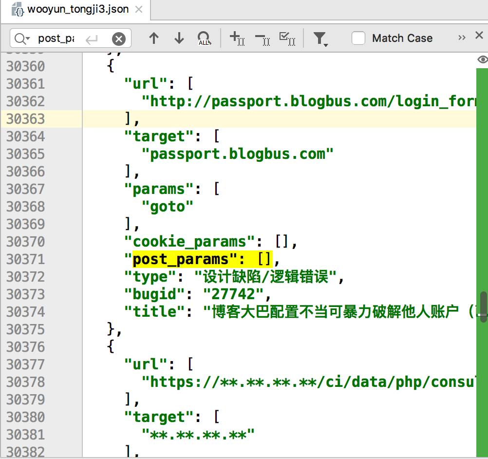

漏洞都是相似的，但挖洞姿势却各有各的不同。
最近收集了很多src的资产域名，正在琢磨怎么用自动化扫描器来扫描，于是有了这个想法。乌云漏洞库有很多样本案例，网络上好像还没有人公开整理过乌云漏洞库中的payload，所以来分析一下吸取乌云前辈们的经验吧。
过程
过程很容易，爬取了乌云镜像库，并将所有出现过的漏洞链接存储起来。但网页中展示的格式都不太一致，在通过手工测试三四十个样本后，才终于将提取规则完善。
存储格式类似

最后保存的json格式大概有30M大小。
结论
出现漏洞的端口Top100
| 端口号 | 出现次数 |
|---|---|
| 8080 | 6710 |
| 80 | 2458 |
| 81 | 1345 |
| 8081 | 925 |
| 7001 | 885 |
| 8000 | 882 |
| 8088 | 740 |
| 8888 | 735 |
| 9090 | 578 |
| 8090 | 477 |
| 88 | 446 |
| 8001 | 406 |
| 82 | 401 |
| 9080 | 350 |
| 8082 | 301 |
| 8089 | 265 |
| 9000 | 225 |
| 8443 | 206 |
| 9999 | 185 |
| 8002 | 162 |
| 89 | 160 |
| 8083 | 142 |
| 8200 | 141 |
| 8008 | 135 |
| 90 | 135 |
| 8086 | 129 |
| 801 | 127 |
| 8011 | 120 |
| 8085 | 120 |
| 9001 | 118 |
| 9200 | 117 |
| 8100 | 111 |
| 8012 | 108 |
| 85 | 105 |
| 8084 | 102 |
| 8070 | 101 |
| 7002 | 99 |
| 8091 | 94 |
| 8003 | 92 |
| 99 | 91 |
| 7777 | 84 |
| 8010 | 78 |
| 443 | 73 |
| 8028 | 72 |
| 8087 | 71 |
| 83 | 70 |
| 7003 | 70 |
| 10000 | 68 |
| 808 | 64 |
| 38888 | 64 |
| 8181 | 64 |
| 800 | 63 |
| 18080 | 63 |
| 8099 | 62 |
| 8899 | 62 |
| 86 | 62 |
| 8360 | 58 |
| 8300 | 57 |
| 8800 | 52 |
| 8180 | 52 |
| 3505 | 49 |
| 7000 | 49 |
| 9002 | 47 |
| 8053 | 43 |
| 1000 | 42 |
| 7080 | 40 |
| 8989 | 38 |
| 28017 | 38 |
| 9060 | 36 |
| 888 | 34 |
| 3000 | 34 |
| 8006 | 34 |
| 41516 | 34 |
| 880 | 34 |
| 8484 | 34 |
| 6677 | 33 |
| 8016 | 32 |
| 84 | 32 |
| 7200 | 31 |
| 9085 | 30 |
| 5555 | 30 |
| 8280 | 29 |
| 7005 | 29 |
| 1980 | 29 |
| 8161 | 28 |
| 9091 | 27 |
| 7890 | 27 |
| 8060 | 27 |
| 6080 | 27 |
| 8880 | 26 |
| 8020 | 26 |
| 7070 | 26 |
| 889 | 26 |
| 8881 | 24 |
| 9081 | 24 |
| 8009 | 24 |
| 7007 | 24 |
| 8004 | 23 |
| 38501 | 23 |
| 1010 | 23 |
最后得到的端口数量在1104，说明在端口扫描时，只需要扫描这一千端口就行，很大节省了效率。
对路径的统计
ASP Top100
| 路径 | 出现次数 |
|---|---|
| /news_show.asp | 233 |
| /about.asp | 205 |
| /news.asp | 201 |
| /login.asp | 173 |
| /index.asp | 167 |
| /admin/login.asp | 141 |
| /list.asp | 130 |
| /show.asp | 112 |
| /shownews.asp | 88 |
| /search.asp | 85 |
| /News_show.asp | 85 |
| /product.asp | 83 |
| /news_list.asp | 70 |
| /article.asp | 67 |
| /view.asp | 59 |
| /default_standard.asp | 59 |
| /info.asp | 58 |
| /news_more.asp | 57 |
| /newshow.asp | 54 |
| /news_detail.asp | 48 |
| /news_view.asp | 47 |
| /admin/index.asp | 46 |
| /products.asp | 46 |
| /nzcms_list_news.asp | 46 |
| /read.asp | 44 |
| /index1.asp | 44 |
| /detail.asp | 43 |
| /contact.asp | 42 |
| /tt/inc/login.asp | 41 |
| /default.asp | 41 |
| /readnews.asp | 40 |
| /mucc/about.asp | 39 |
| /doc/page/main.asp | 38 |
| /About.asp | 37 |
| /onews.asp | 37 |
| /cp.asp | 37 |
| /News.asp | 36 |
| /content.asp | 36 |
| /doc/page/login.asp | 36 |
| /productshow.asp | 35 |
| /view_n.asp | 34 |
| /new.asp | 33 |
| /pic.asp | 33 |
| /newsDetail.asp | 33 |
| /job.asp | 33 |
| /_JBRCMS/Manager/jbr_UploadConfig.asp | 33 |
| /newsinfo.asp | 32 |
| /newsbrow.asp | 30 |
| /newsview.asp | 29 |
| /admin/admin_login.asp | 29 |
| /class.asp | 28 |
| /ProductShow.asp | 28 |
| /productview.asp | 28 |
| /Article_Print.asp | 27 |
| /newsshow.asp | 27 |
| /LstInfo.asp | 27 |
| /page.asp | 25 |
| /jiannya/default.asp | 25 |
| /CompHonorBig.asp | 24 |
| /adminqibo5/Edit/editor/resurm_upfile.asp | 24 |
| /feedback.asp | 23 |
| /viewnews.asp | 22 |
| /manage/login.asp | 22 |
| /ShowNews.asp | 22 |
| /more.asp | 22 |
| /hn_type.asp | 22 |
| /1.asp | 21 |
| /service.asp | 20 |
| /admin/Login.asp | 20 |
| /readpro.asp | 20 |
| /sbweb/nameedit.asp | 20 |
| /Body.asp | 20 |
| /opensoft.asp | 20 |
| /main.asp | 19 |
| /showcareer.asp | 19 |
| /company.asp | 19 |
| /Pro_shcn.asp | 19 |
| /jjweb/nameedit.asp | 19 |
| /cpinfo.asp | 19 |
| /Htmledit/admin/login.asp | 19 |
| //liuyan.asp | 19 |
| /showfwly.asp | 19 |
| /MoralsView.asp | 18 |
| /user/reg.asp | 18 |
| /product_show.asp | 18 |
| /fuwu_list.asp | 18 |
| /lesiure/up.asp | 18 |
| /shell.asp | 17 |
| /admin.asp | 17 |
| /admin/admin.asp | 17 |
| /showservices.asp | 17 |
| /manage/html/ewebeditor/admin_login.asp | 17 |
| /Newsview.asp | 17 |
| /admin/Admin_Login.asp | 16 |
| /down.asp | 16 |
| /info_Print.asp | 16 |
| /person/mailbox.asp | 16 |
| /jieshao.asp | 16 |
| /type.asp | 16 |
| /product_cate.asp | 16 |
ASPX Top100
| 路径 | 出现次数 |
|---|---|
| /Default.aspx | 349 |
| /login.aspx | 341 |
| /UIFrameWork/login.aspx | 307 |
| /Login.aspx | 288 |
| /Detail.aspx | 209 |
| /admin/login.aspx | 157 |
| /index.aspx | 127 |
| /default.aspx | 124 |
| /OT.OA.WEB/UIFrameWork/login.aspx | 76 |
| /search.aspx | 58 |
| /userlogin.aspx | 57 |
| /list.aspx | 54 |
| /Admin/login.aspx | 48 |
| /custom/GroupNewsList.aspx | 45 |
| //SubCategory.aspx | 42 |
| /manage/login.aspx | 38 |
| /aspx/gqxx.aspx | 38 |
| /newsView.aspx | 38 |
| /news.aspx | 37 |
| /Search.aspx | 34 |
| /admin/index.aspx | 31 |
| /Web/Login/PSCP01001.aspx | 30 |
| /city_index.aspx | 30 |
| /main.aspx | 29 |
| /newslist.aspx | 29 |
| /admin/Login.aspx | 28 |
| /show.aspx | 28 |
| /Admin/Index.aspx | 27 |
| /SubCategory.aspx | 26 |
| /G2S/AdminSpace/QE/AddCustomForm.aspx | 26 |
| /NewsList.aspx | 25 |
| /Index.aspx | 24 |
| /about.aspx | 23 |
| /gmis/leftmenu.aspx | 23 |
| /Permission/Application_Query_List.aspx | 22 |
| /test.aspx | 22 |
| /site/ajax/WebSiteAjax.aspx | 22 |
| /select_e.aspx | 22 |
| /ExhibitionCenter.aspx | 22 |
| /system/stu_user_regist.aspx | 21 |
| /News.aspx | 21 |
| /workplate/xzsp/gxxt/tjfx/spsl.aspx | 21 |
| /manager/member/admin_add.aspx | 20 |
| /workplate/xzsp/tjfx/grbjtj/list.aspx | 20 |
| /zfmllist.aspx | 20 |
| /workplate/base/person/listbyorgsel.aspx | 20 |
| /NewsDetail.aspx | 19 |
| /Supplylist.aspx | 19 |
| /Product/ProductList.aspx | 19 |
| /Web/Login.aspx | 18 |
| /articleview.aspx | 18 |
| /model/TwoGradePage/equipmentlist.aspx | 18 |
| /json_db/other_report.aspx | 18 |
| /json_db/flight_return.aspx | 18 |
| //bos/desktop/RequestOrResponse.aspx | 18 |
| /Broadcast/Broadcast.aspx | 18 |
| /json_db/meb_list.aspx | 18 |
| /searchbargain.aspx | 18 |
| /json_db/air_company.aspx | 18 |
| /RiskInfo.aspx | 18 |
| /owa/auth/logon.aspx | 17 |
| /WebDefault3.aspx | 17 |
| /article.aspx | 17 |
| /G2S//AdminSpace/PublicClass/AddCourseWare.aspx | 17 |
| /news_view.aspx | 16 |
| /info.aspx | 16 |
| /CommonPage.aspx | 16 |
| /DownLoadPage.aspx | 16 |
| /fckeditor/editor/filemanager/connectors/aspx/connector.aspx | 16 |
| /support/minisite/thinkpad/htmls/advancedsearch.aspx | 16 |
| /emlib4/format/release/aspx/eml_homepage.aspx | 16 |
| /Gmis/Byyxwgl/xls_lwdbxxedit.aspx | 16 |
| /CMSUploadFile.aspx | 16 |
| /Main.aspx | 15 |
| /OrderDetail.aspx | 15 |
| /webSchool/list.aspx | 15 |
| /Magazine/NewMagazine.aspx | 15 |
| /k4/list.aspx | 15 |
| /k1/preview.aspx | 15 |
| /MoreIndex.aspx | 15 |
| /sysadmin/Login.aspx | 15 |
| /persondh/urgent.aspx | 15 |
| /OnlineQuery/QueryList.aspx | 15 |
| /Broadcast/displayNewsPic.aspx | 15 |
| /Web/News.aspx | 15 |
| /ModifyPassWord.aspx | 15 |
| /ftb.imagegallery.aspx | 14 |
| /TableDataManage/BaseInforQueryContent.aspx | 14 |
| /presellbuild.aspx | 14 |
| /tabid/2159/Default.aspx | 14 |
| /cart.aspx | 14 |
| /G2S/AdminSpace/PublicClass/AddCathedraWare.aspx | 14 |
| /admin/course/uploaddemo.aspx | 14 |
| /searchLines.aspx | 14 |
| /help/pendantShow.aspx | 14 |
| /BsGuide.aspx | 13 |
| /NewsView.aspx | 13 |
| /Admin/fileManage.aspx | 13 |
| /ShowNews.aspx | 13 |
| /Web_Site/Search.aspx | 13 |
Jsp Top100
| 路径 | 出现次数 |
|---|---|
| /login.jsp | 317 |
| /index.jsp | 176 |
| /kingdee/login/loginpage.jsp | 160 |
| /get_pwd.jsp | 126 |
| /zecmd/zecmd.jsp | 109 |
| /console/login/LoginForm.jsp | 103 |
| /login/Login.jsp | 88 |
| /customer.jsp | 87 |
| /is/index.jsp | 81 |
| /uddiexplorer/SearchPublicRegistries.jsp | 79 |
| /yyoa/common/js/menu/test.jsp | 74 |
| /jcms/interface/user/out_userinfo.jsp | 59 |
| /seeyon/index.jsp | 53 |
| /download.jsp | 53 |
| /yyoa/checkWaitdo.jsp | 50 |
| /admin/login.jsp | 49 |
| /list.jsp | 46 |
| /defaultroot/login.jsp | 45 |
| /upload5warn/shell.jsp | 45 |
| /search.jsp | 43 |
| /myname/wooyun.jsp | 40 |
| /web/epublic/upload.jsp | 39 |
| /yyoa/indexPass.jsp | 39 |
| /yyoa/common/selectPersonNew/initData.jsp | 37 |
| /bak.jsp | 35 |
| /yyoa/index.jsp | 35 |
| /postAjax.jsp | 35 |
| /cK/foot.jsp | 34 |
| /tools/SWFUpload/upload.jsp | 32 |
| /nei.jsp | 32 |
| /1.jsp | 31 |
| /wooyun.jsp | 31 |
| /is/cmd.jsp | 30 |
| /download/download.jsp | 29 |
| /cmd.jsp | 29 |
| /webschool/News/news_list.jsp | 28 |
| /chopper/chopper.jsp | 27 |
| /business/notifyView.jsp | 27 |
| /sofpro/gecs/consulmanage/wsts/bbs_title_list1.jsp | 27 |
| /live800/downlog.jsp | 26 |
| /Silic.jsp | 26 |
| /edoas2/oa.jsp | 26 |
| /wooyun/wooyun.jsp | 25 |
| /jmxroot/jmxroot.jsp | 25 |
| /manage/content/docmanage/download.jsp | 25 |
| /ConInfoParticular.jsp | 24 |
| /uddiexplorer/out.jsp | 23 |
| /1/sx/login.jsp | 23 |
| /templates/index/hrlogon.jsp | 23 |
| /comm_front/tzzx/uploadImageFile_do.jsp | 23 |
| /yyoa/ext/https/getSessionList.jsp | 22 |
| /admin/index.jsp | 22 |
| /shell.jsp | 22 |
| /admin/upload.jsp | 22 |
| /detail.jsp | 22 |
| /1/sjleader/login.jsp | 22 |
| /admin/select.jsp | 22 |
| /admin/fxx.jsp | 22 |
| /jbossass/jbossass.jsp | 21 |
| /yyoa/HJ/iSignatureHtmlServer.jsp | 21 |
| /eol/homepage/common/index.jsp | 21 |
| /a/pwn.jsp | 21 |
| /web/common/getfile.jsp | 21 |
| /upload.jsp | 20 |
| /test.jsp | 20 |
| /homepage/LoginHomepage.jsp | 20 |
| /page/maint/common/UserResourceUpload.jsp | 20 |
| /zpsys/index.jsp | 20 |
| /vc/vc/para/opr_initvc.jsp | 20 |
| /pages/manager/managerAddNManager.jsp | 20 |
| /hdcy/zxzx_show.jsp | 20 |
| /yyoa/assess/js/initDataAssess.jsp | 19 |
| /upload5warn/wooyun.jsp | 19 |
| /cms/weblawcase/impList.jsp | 19 |
| /nicknamelogin.jsp | 19 |
| /ca/ma3.jsp | 19 |
| /gkznInfo.jsp | 19 |
| /myname/index.jsp | 18 |
| /df/index.jsp | 18 |
| /guige.jsp | 18 |
| /coremail/index.jsp | 18 |
| /syfile/swfUpload.jsp | 18 |
| /admin/protected/index.jsp | 17 |
| /2/sjtj/login.jsp | 17 |
| /news.jsp | 17 |
| /site/law_artile.jsp | 17 |
| /zwdtSjgl/Directory/lastDirList_iframe.jsp | 17 |
| /content/topicdeal.jsp | 17 |
| /webschool/Book/news_list.jsp | 17 |
| //web/careerapply/HrmCareerApplyPerView.jsp | 16 |
| /cms/web/downloadFiles.jsp | 16 |
| /TSPB/web/xzzx/xzzx.jsp | 16 |
| /prosec.jsp | 16 |
| /adminroot/common/downLoadFile.jsp | 16 |
| /uddiexplorer/SetupUDDIExplorer.jsp | 15 |
| /kingdee/login/loginpage2.jsp | 15 |
| /wui/theme/ecology7/page/login.jsp | 15 |
| /f1print/F1PrintKernelJ1.jsp | 15 |
| /login/login.jsp | 15 |
| /eln3_asp/public/cscec8b/bulletin.jsp | 15 |
PHP Top100
| 路径 | 出现次数 |
|---|---|
| /index.php | 2456 |
| /admin.php | 278 |
| /login.php | 243 |
| /forum.php | 240 |
| /share/share.php | 227 |
| /news.php | 208 |
| /info.php | 191 |
| /phpinfo.php | 181 |
| /plus/search.php | 173 |
| /test.php | 162 |
| /admin/login.php | 162 |
| /src/system/login.php | 146 |
| /article.php | 140 |
| /plus/recommend.php | 138 |
| /search.php | 136 |
| /list.php | 132 |
| /api.php | 117 |
| /admin/index.php | 117 |
| /CmxDownload.php | 113 |
| /about.php | 109 |
| /news_show.php | 98 |
| /download.php | 97 |
| /home.php | 81 |
| /login/login.php | 80 |
| /user.php | 79 |
| /show.php | 76 |
| /page.php | 71 |
| /product.php | 68 |
| /wp-login.php | 67 |
| /main.php | 67 |
| /detail.php | 65 |
| /news_detail.php | 64 |
| /faq.php | 64 |
| /default.php | 60 |
| /content.php | 59 |
| //plus/recommend.php | 58 |
| /news_display.php | 57 |
| /up/UploadTemp/eval.php | 57 |
| /down.php | 55 |
| /www/index.php | 55 |
| /user/storage_explore.php | 54 |
| /abouts.php | 53 |
| /uc_server/admin.php | 50 |
| /rss.php | 49 |
| /wescms/index.php | 49 |
| /1.php | 45 |
| /news_info.php | 43 |
| /products_display.php | 42 |
| /newsdetail.php | 41 |
| /phpmyadmin/index.php | 39 |
| /class.php | 39 |
| /more.php | 38 |
| //index.php | 38 |
| /userlist.php | 37 |
| /plugin.php | 36 |
| /*.php | 36 |
| /products.php | 35 |
| /pics_list.php | 34 |
| /plus/mytag_js.php | 34 |
| /news_list.php | 34 |
| /newsinfo.php | 34 |
| /smenu.php | 33 |
| /include/web_content.php | 31 |
| /batch.common.php | 31 |
| /space.php | 30 |
| /modules.php | 30 |
| /view.php | 30 |
| /read.php | 30 |
| /job.php | 30 |
| /do.php | 29 |
| /link.php | 29 |
| /displaynews.php | 29 |
| /viewthread.php | 28 |
| /m.php | 28 |
| /web/index.php | 28 |
| /member/index.php | 28 |
| /ajax.php | 27 |
| /impl/rpc_company_info_minkh.php | 27 |
| //plus/search.php | 27 |
| /thi.php | 27 |
| /i.php | 26 |
| /member.php | 25 |
| /webmail/login.php | 25 |
| /admincp.php | 25 |
| /download_list.php | 25 |
| /cmxlogin.php | 25 |
| /auto_reg.php | 25 |
| /register.php | 24 |
| /news/class/index.php | 24 |
| /prog/index.php | 24 |
| /thi_details.php | 23 |
| /topic.php | 23 |
| /shopadmin/index.php | 23 |
| /cp.php | 23 |
| /phpsso_server/index.php | 23 |
| /common/web_meeting/index.php | 23 |
| /cn/products.php | 23 |
| /Customize/Audit/MessageMonitor/groupSearch.php | 23 |
| /new/client.php | 23 |
| /notice.php | 22 |
Action Top100
| 路径 | 出现次数 |
|---|---|
| /root/chat.action | 429 |
| /login.action | 291 |
| /index.action | 227 |
| /homeLogin.action | 46 |
| /portal/login_init.action | 46 |
| /stardy/Login.action | 40 |
| /login_login.action | 24 |
| /license!getExpireDateOfDays.action | 23 |
| /indexAction.action | 23 |
| /index/downLoadFile.action | 22 |
| /common/common_info.action | 21 |
| /pages/xxfb/editor/uploadAction.action | 21 |
| /accountlossList.action | 21 |
| /ggxxfb.action | 21 |
| /ivhs/ajax_updateUserInfo.action | 20 |
| /download.action | 19 |
| /Login.action | 19 |
| /syfile/imageCompress.action | 18 |
| /managerOneGgxxfb.action | 18 |
| /user/login.action | 17 |
| /loginAction!login.action | 16 |
| /index!index.action | 15 |
| /login/login.action | 15 |
| /managerNManager.action | 15 |
| /home.action | 14 |
| /indexmanagerLogin.action | 14 |
| /ahsffyww/Default3.action | 14 |
| /DRP/login.action | 12 |
| /spam/system/index.action | 12 |
| /user/gotoLoginPage.action | 12 |
| /ecp/announcement/announcement_view2.action | 12 |
| /managerAddNManager.action | 12 |
| /managerEditNManager.action | 12 |
| /main.action | 11 |
| /system/login_login.action | 11 |
| /login!login.action | 10 |
| /loginAction.action | 10 |
| /login/index.action | 10 |
| /logout.action | 10 |
| /register.action | 10 |
| /security/loginInit.action | 10 |
| /bgxz/bgxzAction_executeBack.action | 10 |
| /nFixcardAllList.action | 10 |
| /beian/login_login.action | 10 |
| //opac_two/mylibrary/comment/queryAllComment.action | 10 |
| /module/newzwgk/getmainById.action | 10 |
| /index/index.action | 9 |
| /shop/member!passwordRecover.action | 9 |
| /mail/login.action | 9 |
| /admin/login.action | 9 |
| /htweixin/InsuranceDownload.action | 9 |
| //admin/user_logon.action | 9 |
| /BSBM/loginedLogin.action | 9 |
| /robot/check-login.action | 8 |
| /website/dflz/dflzSiteAction!sjList.action | 8 |
| /module/newzwgk/viewquan.action | 8 |
| /hbwz/wcms/searchAll.action | 8 |
| /ahsffyww/Default2.action | 8 |
| /wfvideo/login.action | 8 |
| /website-rank/addVoteRecord.action | 8 |
| /module/newzwgk/viewZwxxQianMore.action | 8 |
| /superadmin/index.action | 7 |
| /mall/ui/giftIndex.action | 7 |
| /userlogin.action | 7 |
| /cms/admin/login.action | 7 |
| /szxy/logon.action | 7 |
| /virtual/shouye.action | 7 |
| /feedback/buyIntention!saveBuyIntentionInfo.action | 7 |
| /superadmin/adminLogin.action | 7 |
| /Index.action | 7 |
| /security/login.action | 7 |
| /MemberToLoginIgnore.action | 7 |
| /rdms/satisfyaid/actions/cstContactAction!register.action | 7 |
| /regmail/download.action | 7 |
| /IndexAction.action | 6 |
| /publish/query/indexFirst.action | 6 |
| /manage/login.action | 6 |
| /home/index.action | 6 |
| /eeoaftp/downloadFile.action | 6 |
| /eis/index.action | 6 |
| /gzwl/visit/renewBusinessOrder/renewBusinessOrderDetail.action | 6 |
| /css/myquery/queryWQSBill.action | 6 |
| /LoginAction.action | 6 |
| /detail.action | 6 |
| /index/index!list.action | 6 |
| /auth/login.action | 6 |
| /server/spreq/attachment!download.action | 6 |
| /lmsv5/user!editUserInfo.action | 6 |
| /5clib/bookWeb.action | 6 |
| /otomc/user/loginUI.action | 6 |
| /im-client/imclient/selfHelp.action | 6 |
| /ahsffyww/ZXDefault2.action | 6 |
| /user!login.action | 6 |
| /Dzsw/Shky/hwky.wai/index.action | 6 |
| /aic/webnz/welcome-web-home!welcome.action | 6 |
| /ess/Homepage.action | 6 |
| /skypearl/cn/toPrintCard.action | 6 |
| /spdt/spdt_listSp.action | 6 |
| /xxsearch.action | 6 |
| /web/Info!list.action | 6 |
目录Top100
| 路径 | 出现次数 |
|---|---|
| /admin | 2639 |
| /user | 848 |
| /.svn | 825 |
| /.git | 670 |
| /login | 615 |
| /plus | 550 |
| /news | 533 |
| /web | 517 |
| /upload | 495 |
| /manager | 469 |
| /xxgk/services | 465 |
| /root | 437 |
| /manage | 411 |
| /ftp/com1/html | 409 |
| /cgi-bin | 406 |
| /servlet | 348 |
| /content | 333 |
| /api | 331 |
| /share | 329 |
| /member | 315 |
| /UIFrameWork | 309 |
| /cn | 277 |
| /bbs | 275 |
| /jmx-console | 273 |
| /index | 245 |
| /invoker | 244 |
| /s | 231 |
| /phpmyadmin | 222 |
| /search | 220 |
| /Admin | 211 |
| /papers | 208 |
| /yyoa | 207 |
| /common | 206 |
| /system | 202 |
| /opac | 196 |
| /account | 196 |
| /uddiexplorer | 195 |
| /ajax | 190 |
| /cms | 188 |
| /2001 | 187 |
| /kingdee/login | 178 |
| /Gmis/xw | 173 |
| /1999 | 168 |
| /include | 164 |
| /portal | 161 |
| /back/ticket | 161 |
| /oa | 159 |
| /Gmis/Byyxwgl | 158 |
| /home | 156 |
| /data | 155 |
| /src/system | 148 |
| /WEB-INF | 141 |
| /main | 140 |
| /Chinese | 134 |
| /order | 132 |
| /gov/services | 132 |
| /wap | 131 |
| /console | 130 |
| /app | 130 |
| /is | 129 |
| /Web | 127 |
| /resin-doc/resource/tutorial/jndi-appconfig | 126 |
| /seeyon | 124 |
| /config | 123 |
| /images | 121 |
| /download | 120 |
| /view | 118 |
| /public | 117 |
| /product | 117 |
| /model/TwoGradePage | 117 |
| /knowledge/ClassShow | 115 |
| /en | 114 |
| /zecmd | 114 |
| /m | 114 |
| /soap/envelope | 112 |
| /about | 111 |
| /install | 110 |
| /tushu | 107 |
| /ckq | 107 |
| /poweb | 106 |
| /tips | 105 |
| /resin-doc/viewfile | 104 |
| /www | 104 |
| /console/login | 103 |
| /html | 103 |
| /bbs/topic | 103 |
| /data/admin | 103 |
| /wscgs | 102 |
| /sys | 102 |
| /test | 99 |
| /list | 99 |
| /v_show | 98 |
| /p | 97 |
| /fckeditor/editor/filemanager/browser/default | 97 |
| /User | 96 |
| /uc_server | 96 |
| //plus | 96 |
| /site | 95 |
| /detail | 95 |
| /index.php | 94 |
参数分析
因为无法通过自动化程序把存在漏洞的参数提取出来，所以只是暴力的把所有url的参数都提取了出来，所以这些top参数不一定有代表性，但作为字典应该是不错的。
get参数Top100
| 参数 | 出现次数 |
|---|---|
| id | 6845 |
| action | 1643 |
| type | 1503 |
| m | 1013 |
| a | 992 |
| c | 855 |
| act | 829 |
| page | 813 |
| uid | 616 |
| url | 585 |
| method | 545 |
| cid | 545 |
| ID | 528 |
| mod | 521 |
| aid | 490 |
| keyword | 474 |
| key | 449 |
| t | 449 |
| q | 444 |
| callback | 427 |
| sid | 426 |
| s | 421 |
| name | 407 |
| tid | 399 |
| pid | 392 |
| code | 354 |
| r | 316 |
| p | 307 |
| file | 301 |
| Type | 294 |
| do | 294 |
| redirect | 292 |
| username | 291 |
| _ | 278 |
| op | 259 |
| filename | 252 |
| path | 251 |
| from | 230 |
| classid | 227 |
| f | 222 |
| fid | 221 |
| app | 213 |
| cmd | 213 |
| typeid | 203 |
| _FILES | 201 |
| ac | 194 |
| title | 192 |
| fileName | 191 |
| userid | 190 |
| v | 189 |
| flag | 176 |
| catid | 170 |
| Connector | 166 |
| bid | 158 |
| order | 150 |
| wd | 150 |
| mid | 150 |
| lang | 145 |
| nid | 143 |
| city | 142 |
| CurrentFolder | 139 |
| newsid | 138 |
| Command | 137 |
| password | 131 |
| d | 128 |
| source | 127 |
| sort | 126 |
| user | 125 |
| token | 122 |
| module | 120 |
| class | 118 |
| userId | 115 |
| dir | 113 |
| ie | 111 |
| Id | 108 |
| pwd | 107 |
| num | 106 |
| 103 | |
| appid | 102 |
| u | 102 |
| mobile | 102 |
| i | 102 |
| keywords | 100 |
| version | 100 |
| status | 99 |
| gid | 99 |
| typeArr | 96 |
| g | 96 |
| service | 95 |
| o | 95 |
| ArticleID | 94 |
| query | 94 |
| filePath | 94 |
| orderId | 94 |
| redirect%3A%24%7B%23req%3D%23context.get%28%27com.opensymphony.xwork2.dispatcher.HttpServletRequest%27%29%2C%23a%3D%23req.getSession%28%29%2C%23b%3D%23a.getServletContext%28%29%2C%23c%3D%23b.getRealPath%28%22%2F%22%29%2C%23matt%3D%23context.get%28%27com.opensymphony.xwork2.dispatcher.HttpServletResponse%27%29%2C%23matt.getWriter%28%29.println%28%23c%29%2C%23matt.getWriter%28%29.flush%28%29%2C%23matt.getWriter%28%29.close%28%29%7D | 93 |
| category | 92 |
| word | 92 |
| user_id | 92 |
| k | 91 |
| channel | 90 |
post参数Top100
| 参数 | 出现次数 |
|---|---|
| password | 457 |
| __VIEWSTATE | 430 |
| __EVENTVALIDATION | 315 |
| username | 313 |
| __EVENTTARGET | 210 |
| __EVENTARGUMENT | 210 |
| type | 145 |
| name | 113 |
| id | 111 |
| Submit | 109 |
| __VIEWSTATEGENERATOR | 103 |
| action | 98 |
| 97 | |
| mobile | 87 |
| page | 86 |
| submit | 85 |
| pwd | 67 |
| uid | 66 |
| act | 64 |
| phone | 59 |
| code | 54 |
| userName | 54 |
| keyword | 52 |
| __LASTFOCUS | 50 |
| city | 50 |
| <a href | 47 |
| userid | 47 |
| content | 43 |
| account | 42 |
| y | 42 |
| address | 41 |
| x | 41 |
| UserName | 40 |
| title | 39 |
| button | 39 |
| token | 38 |
| Password | 37 |
| Button1 | 37 |
| passwd | 37 |
| province | 36 |
| tel | 36 |
| sex | 35 |
| pageSize | 33 |
| txtPassword | 29 |
| userId | 29 |
| version | 29 |
| txtUserName | 29 |
| url | 28 |
| sort | 28 |
| key | 27 |
| ImageButton1.y | 27 |
| ImageButton1.x | 27 |
| user | 27 |
| pageNo | 25 |
| method | 25 |
| status | 24 |
| login | 22 |
| sid | 22 |
| channel | 22 |
| 21 | |
| flag | 21 |
| TextBox1 | 20 |
| btnSearch | 20 |
| pass | 20 |
| user_id | 20 |
| domain | 20 |
| rows | 20 |
| ?> | 19 |
| from | 19 |
| sign | 19 |
| uname | 19 |
| order | 19 |
| txtPwd | 19 |
| pid | 18 |
| btnLogin | 18 |
| pageIndex | 18 |
| search | 18 |
| keywords | 18 |
| loginName | 18 |
| lang | 17 |
| user_name | 17 |
| timestamp | 17 |
| imei | 17 |
| PassWord | 17 |
| captcha | 16 |
| number | 16 |
| language | 16 |
| B1 | 16 |
| appid | 16 |
| area | 15 |
| hash | 15 |
| } | 15 |
| (b)((‘\43context[\’xwork.MethodAccessor.denyMethodExecution\’]\75false’)(b)) | 14 |
| (‘\43c’)((‘\43_memberAccess.excludeProperties\<a href | 14 |
| imageField.y | 14 |
| imageField.x | 14 |
| limit | 14 |
| loginname | 14 |
| txtName | 14 |
| cmd | 14 |
Cookie参数Top100
| 参数 | 出现次数 |
|---|---|
| __utma | 226 |
| __utmz | 221 |
| __utmc | 169 |
| __utmb | 142 |
| HMACCOUNT | 126 |
| bdshare_firstime | 100 |
| pgv_pvi | 99 |
| _ga | 91 |
| BAIDUID | 80 |
| __utmt | 71 |
| pgv_si | 69 |
| AJSTAT_ok_times | 56 |
| ci_session | 55 |
| _gat | 49 |
| uid | 37 |
| CheckCode | 33 |
| safedog-flow-item | 33 |
| SERVERID | 31 |
| lzstat_uv | 27 |
| username | 23 |
| IESESSION | 23 |
| vjuids | 23 |
| ECS_ID | 22 |
| ECS[display] | 21 |
| ECS[history] | 21 |
| AJSTAT_ok_pages | 21 |
| ECS[visit_times] | 18 |
| pgv_pvid | 18 |
| SUV | 18 |
| vjlast | 18 |
| city | 17 |
| iweb_hisgoods[15] | 16 |
| IPLOC | 15 |
| cck_count | 15 |
| cck_lasttime | 15 |
| lvsessionid | 14 |
| LXB_REFER | 14 |
| iweb_hisgoods[26] | 13 |
| cookie | 13 |
| CoreID6 | 13 |
| NTKF_T2D_CLIENTID | 13 |
| userName | 12 |
| loginName | 12 |
| BAIDU_DUP_lcr | 12 |
| td_cookie | 12 |
| ECSCP_ID | 12 |
| _jzqx | 12 |
| userid | 12 |
| hd_sid | 11 |
| real_ipd | 11 |
| password | 11 |
| route | 11 |
| vary | 11 |
| nTalk_CACHE_DATA | 11 |
| token | 11 |
| WT_FPC | 10 |
| ADMINCONSOLESESSION | 10 |
| pgv_info | 10 |
| nickname | 10 |
| guid | 10 |
| jiathis_rdc | 10 |
| HMVT | 10 |
| tma | 10 |
| tmd | 10 |
| s | 10 |
| S[CART_TOTAL_PRICE] | 10 |
| S[CART_COUNT] | 10 |
| S[CART_NUMBER] | 10 |
| sessionid | 10 |
| _jzqa | 10 |
| looyu_id | 10 |
| dyh_lastactivity | 9 |
| SESSIONID | 9 |
| s_cc | 9 |
| s_sq | 9 |
| .ASPXAUTH | 9 |
| DedeUserID | 9 |
| DedeUserID__ckMd5 | 9 |
| sid | 9 |
| user | 9 |
| clientlanguage | 9 |
| _jzqc | 9 |
| lang | 9 |
| wordpress_test_cookie | 8 |
| __qc_wId | 8 |
| language | 8 |
| hasshown | 8 |
| cityid | 8 |
| myie | 8 |
| s_nr | 8 |
| __RequestVerificationToken | 8 |
| … | 8 |
| DedeUsername | 8 |
| DedeUsername__ckMd5 | 8 |
| loginState | 8 |
| ip_ck | 8 |
| vn | 8 |
| lv | 8 |
| pageReferrInSession | 8 |
| __cfduid | 8 |
历史漏洞参数API
上面的top记录说实话我也看不出什么来，在整理了相关字典后，又有了这样一个想法。之前国外有大神通过深度学习了大量开源软件的源码及结构后做出来一款辅助编程的程序，当你输入代码前半段的时候会自动猜测意图并匹配出代码后半段，效果还不错。
所以，通过分析了这些样本后，我也能做出一个API，只需要一段url或从burpsuite中截取的请求包，api会分析域名，返回该域名的历史漏洞以及漏洞类型，通过分析参数(get,post,cookie),从历史漏洞库中匹配出该参数的历史漏洞以及漏洞类型。
如果把这个api集成到一些扫描器或burpsuite中，也不失为一个好的辅助手段～
2019.12.22 更新
将Burpsuite插件完成了：https://github.com/boy-hack/wooyun-payload